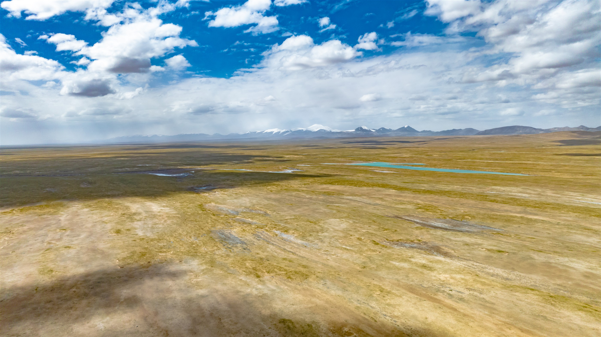
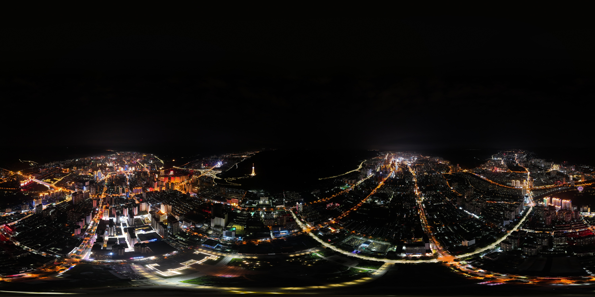

位置与地形Location & terrain
青海位于中国西北部和青藏高原东北部，省会为西宁。昆仑山、祁连山和三江源构成主要地理背景。Qinghai lies in northwestern China on the northeastern Tibetan Plateau. Xining is its capital; the Kunlun, Qilian and Sanjiangyuan regions define much of its geography.

QINGHAI / CHINA / 36°N · 101°E
中国西北部的高原省份。页面以地理、环境、资源、城市和工程记录为主，不做旅行宣传。A high-plateau province in northwestern China. This page is an atlas of geography, environment, resources, cities and engineering—not a travel brochure.
EARTH / SOLAR GEOMETRY
地球使用真实陆地边界数据绘制，青海以蓝色标记。地球自转动画和晨昏线按当前日期、时间与近似太阳赤纬实时计算。The globe uses real land-boundary data, with Qinghai marked in blue. Rotation and the terminator are calculated from the current date, time and approximate solar declination.
面向不了解青海的读者，先给出地理和工程背景。A concise geographic and engineering context for readers who do not know Qinghai.
青海位于中国西北部和青藏高原东北部，省会为西宁。昆仑山、祁连山和三江源构成主要地理背景。Qinghai lies in northwestern China on the northeastern Tibetan Plateau. Xining is its capital; the Kunlun, Qilian and Sanjiangyuan regions define much of its geography.
长江、黄河和澜沧江等大河的源区位于省内。高海拔、低温、低压、强日照和昼夜温差是常见条件。The headwaters of the Yangtze, Yellow and Lancang rivers are in the province. High altitude, cold, low pressure, strong sunlight and large diurnal ranges are common conditions.
盐湖、矿产、风能、光伏和高原交通工程集中分布在柴达木盆地及周边地区，构成照片中反复出现的工程背景。Salt lakes, minerals, wind, solar and plateau transport infrastructure shape the Qaidam Basin and its surrounding engineering landscape.
FIELD ATLAS / PHOTOGRAPHS BY YICHEN KONG
每组照片保留拍摄备注。横向画册避免把高像素照片压缩成一张平铺长图；点击任意照片进入大图。Captions are preserved as shooting notes. Each album is a horizontal rail instead of a flat wall of compressed images; click any image to view it large.
Loading atlas…
